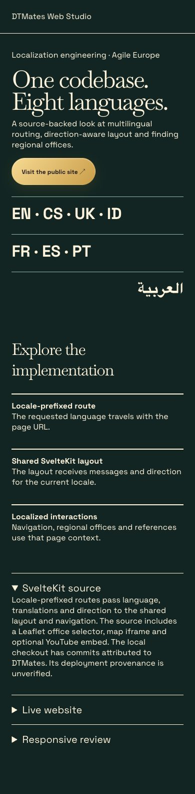

Úvod
Rychlé představení značky a jasný další krok.
TECHNICKÁ PŘÍPADOVÁ STUDIE / WEB & LOKALIZACE
Vícejazyčná firemní prezentace potřebuje víc než jen přeložené nadpisy. Musí správně fungovat navigace, regionální informace, mobilní rozvržení i obsah psaný zprava doleva.
Případová studie pracuje s ověřeným lokálním zdrojovým projektem. Na veřejném webu je uvedeno studio Liquid Design. Neprohlašujeme autorství celé veřejné realizace ani nezveřejňujeme cizí zdrojové kódy.
 SKUTEČNÝ CHROMIUM ZÁBĚR NAŠÍ STUDIE · NIKOLIV OFICIÁLNÍ WEB
SKUTEČNÝ CHROMIUM ZÁBĚR NAŠÍ STUDIE · NIKOLIV OFICIÁLNÍ WEBThese are real desktop and mobile Chromium captures of our own Agile Europe technical case-study page. They are not screenshots of an official website delivered by DTMates.
VIEWPORT CROP OF OUR CASE · NOT THE OFFICIAL WEBSITEStructured homepage, company, solutions, references and contact presentation in our technical study.
Language and right-to-left considerations documented in the case; not proof of eight deployed external translations.
Actual local screenshot captures are recorded and source-matched. Public website code is not provided as our work.
The official Agile Europe site is an external reference. This local case study and its verified captures are ours; no third-party production code or company photographs are redistributed here.
Fotografie nepopisujeme jako vlastní ani jako realizaci oficiálního firemního webu. Níže jsou ověřené záběry naší lokální technické prezentace, vytvořené v Chromium; skutečný veřejný web firmy je dostupný samostatně a uvádí Liquid Design jako svého tvůrce.

Zdrojová reference: samostatný veřejný web a aktuální firemní informace. Autorství oficiálního webu zde nepřipisujeme našemu studiu.
Otevřít oficiální Agile Europe ↗Technická studie architektury, vícejazyčnosti, navigace a mobilních rozvržení v našem projektovém portfoliu.
Otestovat lokální případovou studii ↗typů stránek
jazykových verzí
podpora arabštiny
mobilní i desktopové rozvržení ověřeno
01 / LOKALIZACE
Stejná informační architektura, různé jazyky a odlišné směry čtení. Věnovali jsme pozornost především přehledné navigaci a použitelnosti na malých obrazovkách.
02 / STRUKTURA WEBU
Pět typů stránek pro jasnou cestu návštěvníka od představení společnosti k informacím a kontaktu. Názvy níže jsou ilustrací informační struktury, nikoli úplným katalogem skutečných URL.
Rychlé představení značky a jasný další krok.
Kontext, odbornost a důvěryhodná prezentace.
Pochopitelná nabídka a jednotlivé oblasti činnosti.
Srozumitelné příklady a vizuální prezentace práce.
Regiony, dostupné informace a cesta k poptávce.
03 / FUNKČNOST
U vícejazyčného webu rozhodují také detaily: konzistentní odkazy při přepínání jazyků, přístupná navigace, přirozené čtení arabštiny a použitelnost v mobilním rozvržení.
Zvolené jazykové varianty mají odpovídající obsah a směr čtení.
Obsah zůstává čitelný na mobilu, tabletu i větší obrazovce.
Výběr kanceláří a kontaktních informací je součástí lokálního projektu.
DTMATES / WEB STUDIO
Projděte si naše další ukázky nebo si nezávazně připravte vlastní rozsah webu, jazyků a funkcí.
Připravit zadání ↗